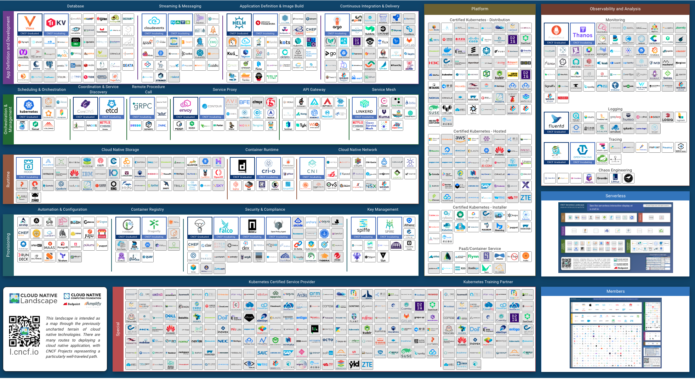
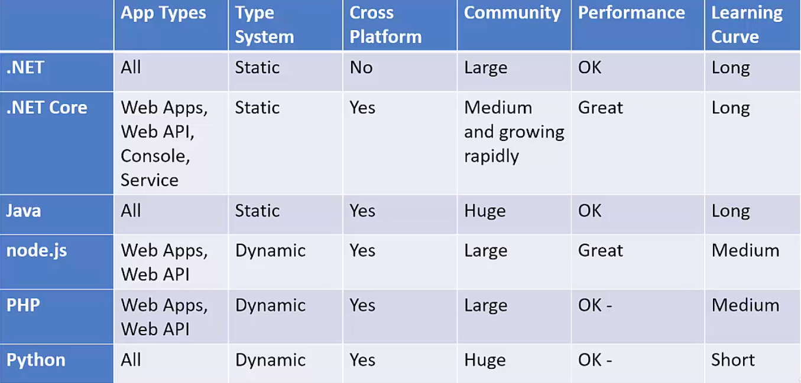

As with most topics I research now a days I went to the CNCF to make a choice on what I should be using technology wise.
A useful tool was. their Cloud Native Trail map, intended to provide an overview for enterprises starting their cloud native journey.
I also looked at the technology that makes up. part of the CNCF

So knowing I wanted to learn Micro Services using the 12 Factor App methodology and using the information from the CNCF, I choose the following technologies
I choose Kubernetes as the platform to develop for, since it comes with the building blocks for service discovery, logging, monitoring and scaling of the applications built into it.
In my environment I will be using CoreDNS for the service discovery, for networking I will stick to a layer 2 network using Flannel. The staging environment will use Rook for the distributed storage and docker containers will be used for containerisation.
Languages
Some of the recommended languages are:

Since It has been 14 years since I have developed on .Net, I decided to use nodejs which I have been using for 3 years.
The front end will be developed in NextJS.
This was mainly due to the fact I am familiar with React and need to learn more about server side rendering. I also learned about a major issue when running in Kubernetes, so it was a good choice.
The backend will be developed in NodeJS using Typescript
See design considerations for why we are using typescript
Jest has been used to create the automated tests
Database
In phase 1 of this example I am only implementing local stores for each service which are simple structures so I have chosen MongoDB as their data stroage
and the expiration service requires an in memory cache so i choose Redis.
In phase 2 i will be implementing a Management Information service, so I will be using a SQL database for this, most probably MySQL or Postgres.
Any storage of files in phase 2 will use Rooks S3 binary compatable object storage.
Payment Service
To simulate payments I have used the Stripe payment service in test mode
Event Streaming Bus
The NATS Streaming Server was used as the event bus, because the course I took recommended it as a good starting server for kubernetes
Since this application is developed to run in Kubernetes, I used the following tools
- Docker for Desktop - as a development platform and enabling the Kubernetes module
- Skaffold - to deploy changes automatically when the source code was saved
- Docker - for the container technology
- GitLab container registry - used instead of dockerhub since it is free for private registries
- GitHub - was used for a git repository and run CICD automated tests and deployments
- Digital Ocean - was used to simulate a production deployment, since this is the cheapest and easiest platform to use.
- npmjs - to store common node npm modules we develop
Phase 2
During phase 2 of the project I will:
- Add a Management Information Service using MySQL or Postgres
- Create a fully featured front end using MaterialUI in NextJS (1st phase kept it very simplistic so as not to confuse the audience)
- Introduce Prometheus/Grafana monitoring into the kubernetes cluster
- Instrumenting the NodeJS application for Prometheus monitoring
- Add a central logging mechanism (tools yet to be researched)
- All of the tests are at a component level, I need to look at how data can be setup for reliable integration tests in staging, my main worry on testing microservices.
{kind=link}
{kind=link}
{kind=link}
{kind=link}